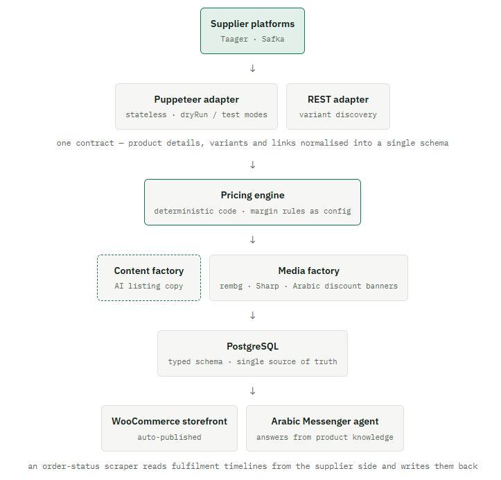

Jotia — Dropshipping Automation Platform
An end-to-end dropshipping machine: supplier discovery, deterministic pricing, AI content, auto-publishing, and an Arabic Messenger sales agent — built as 12 self-hosted n8n workflows and 4 Node.js microservices over PostgreSQL.
Honest framing: the Jotia store itself is closed. This case is presented as a documented engineering build — the codebase and workflows are the evidence, and no business figures are claimed.
01The Business Problem
Dropshipping lives or dies on catalog velocity: find supplier products, price them with a margin that survives shipping and returns, produce listing content, publish, and answer buyers — for every product, continuously. Done by hand, each step is small; together they are a full-time job that caps how much catalog one person can run.
02What I Built
Supplier Discovery Adapters
Stateless Puppeteer and REST adapters for two supplier platforms (Taager, Safka), each behind a unified contract: product details, variant availability, and links normalized into one schema regardless of source.
Deterministic Pricing Engine
Margin and pricing rules run in plain code — no AI near money. Supplier cost in, sellable price out, reproducibly, with the rules editable as configuration.
AI Content & Media Factory
Generated listing copy plus an image pipeline: original photo saved, background removed with rembg, and Arabic discount banners composed with Sharp using custom Arabic fonts — publish-ready media from raw supplier images.
Auto-Publishing + Arabic Sales Agent
Products published to the WooCommerce storefront automatically, and an Arabic-language Messenger sales agent answered buyers from the product knowledge — closing the loop from discovery to conversation.
03Engineering Decisions
04Where It Fits
Jotia was the engineering proving ground for the ideas that later became the AI Commerce Operating System: adapters behind contracts, deterministic money paths, AI limited to language and media, and a database as the single source of truth. One of 10+ stores I have built and operated end to end — presented here for the build, not the business.
Jotia pipeline — suppliers → pricing → content → storeassets/jotia-pipeline.png
